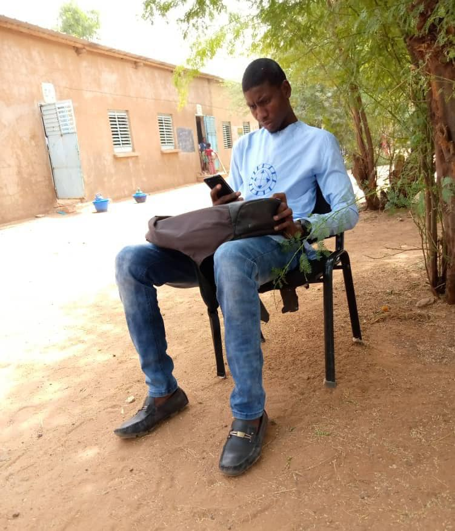

Amadou GOLOKO
Numéro : 776419160
Email : amadougoloko94@gmail.com
Adresse : Sinthiou Bamambe, kanel, Matam
Facebook
Instagram
FORMATION
EXPÉRIENCES
COMPÉTENCES
PROFIL LINGUISTIQUE
LOISIR
contact
FORMATION
BFEM en 2013 à Institut Islamique Cheikh Zayid Boun Soultan Ali Niyane
BAC en 2017 à Institut Islamique Cheikh Zayid Boun Soultan Ali Niyane
Licence en langue arabe en 2022 à UCAD Département d'Arabe
CFS-EM Certificat de fin de stage élève-maitre en 2020
CAP Certificat d'aptitudes pédagogiques en 2022
Certificat en bureautique en août 2023 à CEDEPS DAKAR
Certificat en Informatique et internet en septembre 2023 par FORCE-N
EXPÉRIENCES
Enseignant à l'École Élémentaire de Sinthiou Bamambe 2 De 2020 à 2022
Enseignant à l'EFA de Sinthiou Bamambe De 2022 à nos jours
COMPÉTENCES
Enseigner la langue arabe
Utiliser les outils bureautiques : Word, Excel et PowerPoint
PROFIL LINGUISTIQUE
Arabe : lire, parler et écrire
Français : lire, parler et écrire
Anglais : lire, écrire et parler peu
LOISIR
Sport
Actualités